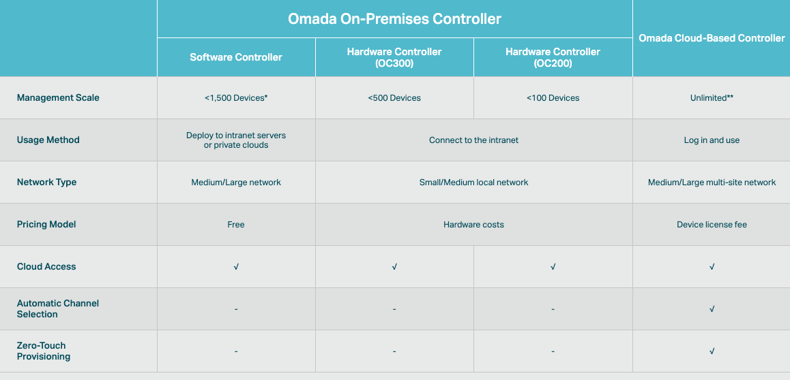

Introduction¶
TP-Link Omada SDN system is an easy-to-use business class corporate network system. It has a controller for discover, set up, and manage the Omada SDN devices. With the TP-Link Omada cloud directory service, and Omada mobile app, you can get instant notifications from your system and make immediate responses. Anytime and anywhere. The solution includes the network controller, wireless access point, network switche, and load balance VPN router.
What is SDN?¶
The SDN stands for Software Defined Networking. Deploying traditional network devices, you have to have a thorough understanding of the network equipment, the interaction behaviors in between, and the set-up commands to each one of the devices. The Omada SDN abstracts the system controls in one center controller provides smooth integrations on the system level and save the detailed device set up to the software commands.
Controllers¶
There are three different flavors of controllers in Omada SDN Solution, hardware controller, software controller, and cloud based controller. Each controller was designed to server a targeted size of network. The OC200 can manager 100 Omada SDN devices. The OC300 can manage 500 devices. The software controller can manage up to 1,500 devices. The cloud based controller is a subscription based management service and has no limit in the number of managed devices.
The network control logics in different controllers are the same. Network devices, switch, router, and wireless AP, can be managed together as a site. A site is a logical network unit consisted by a group of network devices. In most of the cases, a logical site is mapping to a physical network site. In some cases, you can set up logical sites for managing purpose.
Once the site has been set up. It can be freely moved from one controller to another without extra effort. You can set up your first sites on a OC200 hardware controller to start your project. As your business is growing, you can migrate the site settings to the OC300, to the software controller or to the cloud based controller.
Wireless Access Points¶
TP-Link Omada EAP high density wireless access points were designed for crowded environments. With the latest WiFi 6 technology, the Omada EAP can service multi-gig communication wireless. The 802.11ac wave 2 (WiFi5) access points provide solid connections and well coverage for business. The 802.11n access points expands the wireless everywhere for your IoT devices.
List of EAPs¶
Note
This is the list of Omada SDN selling in US region. Wireless access points can be different by region due to the local regulation.
The Omada EAPs can be grouped by their model numbers. The Omada EAP6xx are WiFi 6 access points. The EAP2xx are 802.11ac wave 2 (WiFi 5) access points and the The EAP1xx are classic 802.11n access points. The EAP3xx series has been end of life since 2018.
High density series¶
Model |
EAP660 HD |
EAP620 HD |
EAP265 HD |
|---|---|---|---|
Class |
WiFi 6 |
WiFi 6 |
WiFi 5 |
Speed |
AX3600 |
AX1800 |
AC1750 |
Max clients |
1024 |
1024 |
620 |
Ethernet |
2.5G |
Gigabit |
Gigabit |
Ceiling mount EAPs¶
Model |
EAP245 |
EAP225 |
EAP115 |
|---|---|---|---|
Class |
802.11ac |
802.11ac |
802.11n |
Speed |
AC1750 |
AC1350 |
N300 |
Other EAPs¶
Model |
EAP225-Outdoor |
EAP110-Outdoor |
EAP235-Wall |
EAP225-Wall |
|---|---|---|---|---|
Class |
802.11ac |
802.11n |
802.11ac |
802.11ac |
Speed |
AC1200 |
N300 |
AC1200 |
AC120 |
Ethernet |
Gigabit |
10/100 |
Gigabit |
10/100 |
Managed Switches¶
All Omada SDN switches came from the field proof JetStream business manage switches. The connecting speed can be varied from 10G, 5G, 2.5G, gigabit, to 10/100. Deploy your network as flexible as you can and manage your network as easy as possible. With the Omada controller, setting virtual networks and personal authentications are just a few clicks away.
All 2021 JetStream managed switches are compatible to Omada SDN and can be controlled by the Omada SDN controller. The new JetStream managed switches can still work on standalone mode as usual, and enhanced by adding up the SDN capabilities. There are two sub class of the managed switches, smart managed switch, model numbered TL-Sx2xx and the fully managed TL-Sx3xx models. The major differences between smart managed switches and fully managed switches are the features in standalone mode. In controller mode, the features on the switches are the same.
Note
The JetStream switch features may be different with the future Omada controller. With the version 4.2.8, features in controller model are all the same.
10/100 Managed Switch¶
TL-SL2428P(UN)V4.2 JetStream 24-Port 10/100Mbps + 4-Port Gigabit Smart Switch with 24-Port PoE+
Non-PoE Gigabit Switches¶
TL-SG2008 JetStream 8-Port Gigabit Smart Switch
TL-SG3428 JetStream 24-Port Gigabit and 4-Port SFP L2+ Managed Switch with 24-Port PoE+
TL-SG3428X JetStream 24-Port Gigabit and 4-Port 10G SFP+ L2+ Managed Switch with 24-Port PoE+
PoE Gigabit Switches¶
TL-SG2008P JetStream 8-Port Gigabit Smart Switch with 4-Port PoE+
TL-SG2010P JetStream 8-Port Gigabit Smart Switch with 8-Port PoE+ and 2-port SFP
TL-SG2210MP JetStream 8-Port Gigabit Smart Switch with 8-Port PoE+ and 2-port SFP (high power)
TL-SG2428P JetStream 24-Port Gigabit Smart Switch with 24-Port PoE+ and 4-port SFP
TL-SG3428MP JetStream 24-Port Gigabit and 4-Port SFP L2+ Managed Switch with 24-Port PoE+
TL-SG3428XMP JetStream 24-Port Gigabit and 4-Port 10GE SFP+ L2+ Managed Switch with 24-Port PoE+
Load Balance VPN Router¶
The SafeStream Load Balance VPN routers were designed for small offices as well as the telecommuters. The router can connect up to 4 ISP for voice and data, corporate and private line. You can aggregate bandwidth with the multiple services, or set the rule to direct the certain traffic going to the dedicated line. Easy setup IPSEC VPN and OpenVPN for company connection and personal use. Attack detection and stateful firewall improves your network security. Portal access to personalize your network access. All the tools that everything you need to make the fast an secured connections are set inside the box.
There are two SMB routers in this category ER605 and ER7206. Both of the routers were designed for small office and remote office. The ER7206 is in a 9 inches wide metal box and ER605 has 6 inch in width. ER605 has wall mount slot for easy placement.
Note
TL-SG605 was the previous model number of ER605 and the TL-SG7206 was the previous model number of ER7206.
Comparison of the ER7602 and ER605¶
Model |
ER7602 |
ER605 |
|---|---|---|
Speed |
Gigabit |
Gigabit |
Concurrent Session |
150K |
25K |
New Session Rate |
5.5K/s |
2.4K/s |
IPSEC VPN Throughput |
291.6Mbps |
41.5Mbps |
Key Features¶
There are many features the SafeStream routers can do in a small office environment. The key features are listed here:
IPSEC, L2TP, and OpenVPN The IPSEC is the most popular VPN connections in use in the industry. The SafeStream IPSEC VPN connection can act as a server connecting to the clients remotely at home or at the coffee shop. L2TP (over IPSEC) provides an easier point to point connection through firewalls. OpenVPN is a proprietary, but very popular, VPN connection. You can almost set the end point anywhere and the OpenVPN can connect you through NAT and firewalls with no effort.
Load Balance The SafeStream SMB router can connect up to 4 ISPs. Whether you want to make the multiple connection to balance the traffic loads or simply make a connection as a fallback line, the SafeStream router can do the job for you.
Digital Phone System Friendly The SafeStream works with different phone systems. You can enable/disable the SIP ALG. Set the priority route, using ACL to allow or block visitors
Note
The OpenVPN feature is only available when the SafeStream router is in the controller model
Site-to-Site vs. Client-to-Site¶
The terms are self explained. The site-to-site VPN creates a secured tunnel between two sites. Computers on both sides don’t have to aware the existence of the secured tunnel and can communicate to end points on both sites without effort. In Omada SDN, you can create a site-to-site VPN tunnel simply states which site you want to connect with and then the tunnel can be created.
If you have a single device you want to connect to the office securely. You can setup the client-to-site VPN server on the SafeStream router.
VPN Capacity¶
VPN secured tunnel requires encryption and decryption to the traffic on both directions. Depends on the method of the encryption and decryption you choose, the passing through speed and tunnel capacity will be different.
Model |
ER7602 |
ER605 |
|---|---|---|
IPSEC Tunnels with 3DES |
100 |
20 |
OpenVPN Tunnel |
50 |
16 |
OpenVPN Client |
10 |
10 |
Load Balance¶
The load balance SafeStream routers provided are not on the datagram based, but on session based. You can set your policy allowed which session going through which router and the session fall back can be performed based on the fall back rules.
Your Deployment, Your Choice¶
Don’t want to set up a controller? Don’t like the cloud connection?
No problem!
All Omada SDN solution devices can still work in standalone mode without controller. The Omada SDN controller can work standalone without TP-Link cloud service. Depends on your design and your preferences, you can choose the way you want your network behave.